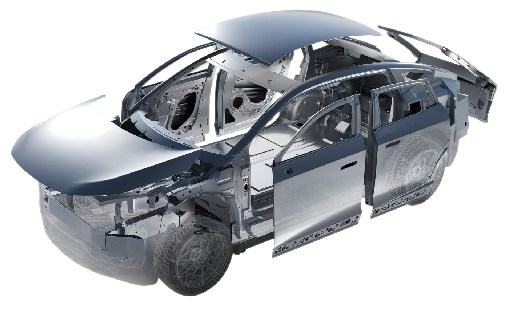

Engineer the decision. De-risk the capital.
Driving industrial transformation, from concept to execution
IMS brings advanced manufacturing engineering, simulation and optimization services to the Kingdom of Saudi Arabia: from product design and process feasibility to logistics, ergonomics and press automation.

Think Forward.
About IMS
From design to production, we support our partners through every stage
Integrated Manufacturing Systems (IMS) is a Riyadh-based engineering and consulting company that provides a comprehensive range of body, chassis, and engineering support and solutions to manufacturers in the Kingdom of Saudi Arabia and the region. Our project-specific engineering and design services form part of a consulting portfolio that serves private-sector manufacturers, the Ministry of Industry and other relevant authorities in the Kingdom.
IMS delivers specialized services to support the design and manufacture of vehicle body systems, components, assemblies, and complete vehicle frames.
We guide our partners from concept to execution; optimizing product design for manufacturing, managing global programs, and ensuring quality across every stage of the project.
For customized needs, IMS taps into an extensive network of Subject Matter Experts to deliver tailored, high-impact solutions that drive operational excellence.

Services
Advanced Engineering Services
IMS can help manufacturers achieve world-class manufacturing excellence.
Advanced Manufacturing Engineering
Product design analysis and manufacturing feasibility studies, Geometric Dimensioning and Tolerancing (GD&T), joining technologies, error proofing and global technical alignment. Specializing in process & layout development optimizing for resource utilization, and throughput.
Learn moreLogistics & Material Flow Optimization
Plan For Every Part (PFEP), Value Stream Mapping (VSM), shared resource scheduling, min/max lot sizes, logistic conveyance strategies, route planning, long cycle standardized work, traffic simulations.
Learn moreThroughput & Buffer Optimization
Predict manufacturing capacity, constraints and buffer optimization, bottleneck and critical station analysis, Jobs Per Hour (JPH) & Overall Equipment Effectiveness (OEE) calculations.
Learn moreErgonomics Simulation & Analysis with Human Factors Engineering
Human reach 3D simulations, and mitigate risks to human-system performance and worker well-being, Ergonomics Failure Modes and Effects Analysis (EFMEA).
Learn moreContinuous Improvement Processing
Throughput improvement of existing lines, resource re-deployment, volume increase/decrease, engineering changes, product design manufacturing cost reduction.
Learn moreMachine Transfer Optimization & Virtual Twin Development
Stamping press digital twin to optimize material transfer, predict Stroke Per Minute (SPM), interference analysis to optimize transfer tooling & dies, end-of-arm tooling concept, and bottle-neck analysis for system balancing.
Learn moreCustom Solutions and Special Projects
Tailored solutions for unique challenges that fall outside our core offerings, designed to support both greenfield and brownfield environments with precision and flexibility.
Learn morePeople. Systems. Progress. Together.
Engineer the decision. De-risk the capital.
Every recommendation we make is validated in simulation before a single piece of equipment is ordered.